首先抛一个Windows用户的下载链接：Git for windows
下载下来之后直接安装，除了下图选第一个，其他的不用改，直接next就行。
选这个use git from git bash only
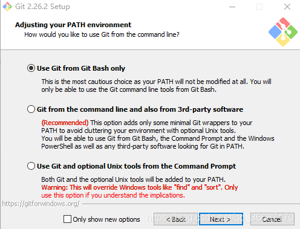安装完成后我的电脑上是显示了这么三个东西的。
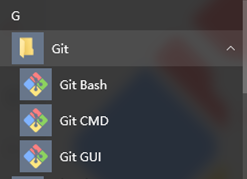下载之后打开是这个样子的，第一件事设置用户。注意这个不是登录哦，是给你的电脑设置一个用户，等你上传的时候，告诉远程仓库是谁上传的而已。
git config --global user.name "Your Name"（注意前边是“- -global”，有两个横线）
git config --global user.email "email@example.com"
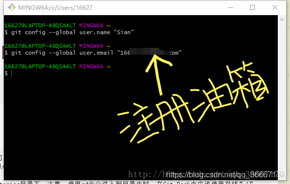首先你可以试着打开你本地仓库的文件夹。
比如我要打开E:\code有两种方法
注意！ 使用cd命令进入到目录中时，在Git-Bash中应该使用斜线”/”， 而不是反斜线”\”
①可以逐个输入文件夹名（在文件夹名称前要加cd ）
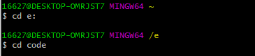②也可以直接输入一个完整的文件夹路径
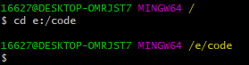当前目录
你输入命令之前上边有一行字，后边那段黄色的就是你所在的文件夹位置。你也可以输入$ pwd，回车之后进行查看。
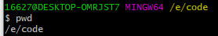查看当前文件夹都有什么文件$ ls
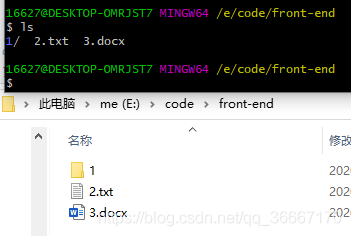当然你也可能进错文件夹，要学会回退。
$ cd .. 点和cd之间有空格
就可以回退到上一个文件夹。
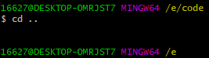$ mkdir +文件夹名字 只能新建文件夹
我在E盘的code文件夹下新建一个front-end文件夹。建完之后打开文件夹看看创建成功了嗷。
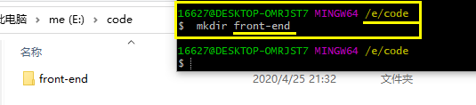touch +文件名 只能新建文件
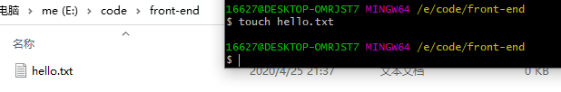$ rm 文件名.文件类型 删除文件
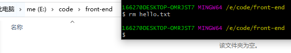$ rm -r 文件夹删除文件夹 ，注意这个要回到上一级文件夹才可以删。比如我要删除front-end文件夹，front-end在code里边，我就要在code目录下删除。
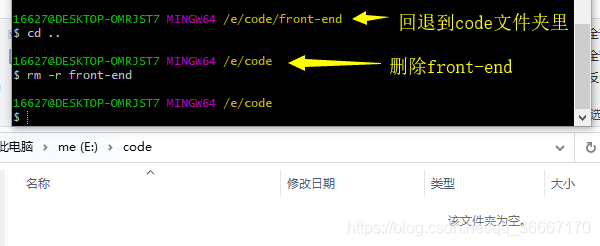你既然学git，那就是想要把本地的代码放到远程仓库托管。 托管就是，代码是小朋友，你就是他父母，你把它丢到托儿所，让托儿所帮你管。怎么去托儿所，总不能一生下来就在托儿所。你得把孩子从家里送过去吧。放学了你得把孩子接回来吧。（当然这个例子不太恰当。） 那你需要一个本地存储代码的地方（家里），你还需要一个远程仓库（托儿所）
进入到你想建立本地仓库的文件夹，它可以是空的，你建好了之后再写代码。里边也可以有东西，直接建就好。
$ git init
我用个空文件夹做示范：E:\code\front-end
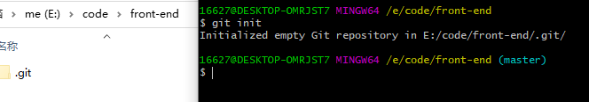初始化成功之后，你的文件夹里就会多出.git的隐藏文件。 (●′ω`●)千万不要乱删，你如果看他烦你就设置一下不显示隐藏文件。
打开github右上角，点击new repository
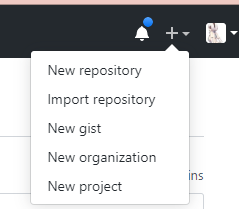
说一下仓库的私有和公有
本来也是个开源社区，很多大佬们都把自己的东西开源了，也就是放在共有仓库里，可以让人查阅。也鼓励大家使用共有仓库 (๑•́ ₃•̀๑)。
以前使用私有仓库是付费， 或者你可以申请学生认证获得私有仓库的使用权。但是现在2020年3月份的时候我收到github的邮件，邮件里边说现在已经开放私有仓库的使用了。
说一下学生认证
以前github的教育认证可以让学生和教育者免费使用私有仓库，并且还有许多其他的优惠政策。比如github的一些付费功能，教育认证之后会有巨大的折扣。戳我查看如何进行学生认证╰(●’◡’●)╮
孩子在家里，你能用意念让他直接飞到托儿所吗，显然不可能，那你总得把他送过去，或者用校车之类的吧。
那现在就得想办法建立远程仓库和本地仓库的连接。
注意，你是仓库的主人你才能使用SSH连接，如果你不是仓库主人，只是某个项目的成员，那你只能使用HTTPS连接。
不管使用哪一种连接方式，都是一样操作，现在我就用SSH链接了。复制红框框里的代码。

$ git remote add + 名字 + 连接地址
连接地址就是你刚才复制的那块。
我下边写的就是添加一个叫origin的远程仓库。
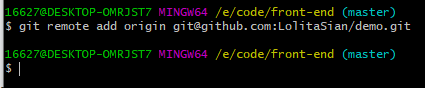名字origin：你在往远程仓库推送的时候，你会说我要推给谁，总得给它起个名字。（你把孩子送去托儿所，你总得告诉司机是哪个托儿所吧）并且你以后可能会一个本地仓库连接多个远程仓库（这是后话），所以必须起名字加以区分。
补充一下：你的本地仓库可以链接多个原厂仓库，github毕竟是国外的，有时候访问起来会很慢，因此你可以连接到国内的仓库上，比如gitee之类的。详细可以等你学会了这个文章之后，戳一下看这一篇→git bash 连接多个远程仓库
上边的方法能用但是比较笨(…•˘_˘•…)，所以你得学个高端一点的。
$ git remote -v
测试一下，看到没。显示我已经添加了叫origin的仓库。一个push一个fetch，就是一个把代码推到远程仓库，一个把代码从远程仓库取回来。这两个一定是成对存在的。
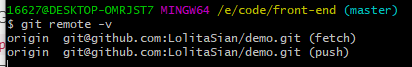补充一点：如果你以后不想连接这个远程仓库了，只需要输入git remote remove + 名字即可。比如我刚才添加的远程仓库代称是origin，那我就要写：git remote remove originp>
什么是修改的文件，你新建、更改、删除文件都是修改。
git add有好多种。下边我介绍一下，看看就行，对现在来说记住最后一条就可以了：
$ git add +文件名.文件类型 ，将某个文件加到缓存区
$ git add +文件名.文件类型 ... 文件名.文件类型 ，将n个文件添加到缓存区
$ git add xx文件夹/*.html，将xx文件夹下的所有的html文件添加到缓存区。
$ git add *hhh ，将以hhh结尾的文件的所有修改添加到暂存区
$ git add Hello* ，将所有以Hello开头的文件的修改添加到暂存区
git add -u ，提交被修改(modified)和被删除(deleted)文件，不包括新文件(new)
git add .，提交新文件(new)和被修改(modified)文件，不包括被删除(deleted)文件
…
git add -A，提交所有变化。git add前几条都可以记不住，这个必须记住！！！
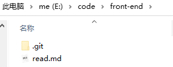我现在在本地仓库新建一个文件叫readme.md，现在我将它添加到缓存区。（没错虽然图里是read，但是我就是要创建叫readme的文件，往后看就明白了）
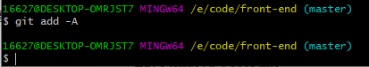$ git commit -m "修改注释"
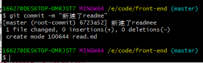一定要加-m，否则会进入vim编辑器，对新手很不友好，所以还是加上-m。
向一个空的新仓库中推文件：$ git push -u 仓库名称 分支
仓库名称：刚才我添加连接的时候，给仓库起名叫origin
分支：你现在只有主分支，所以分支直接写master。以后合作项目的时候，成员之间建了不同的分支，你就可以往你自己的分支上推。
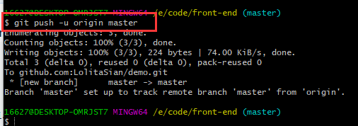我们第一次推送master分支时，加上 –u参数才会把本地的master分支和远程的master分支关联起来，就是告诉远程仓库的master分支，我的本地仓库和是对着你的哦，不是对着别的分支的哦。
只有第一次推的时候需要加上-u，以后的推送只输入：
$ git push 名称 分支
还有一个$ git push origin master -f 强制推送，如果你某次推送失败，git bash报错，你懒得处理错误，你就可以用这个。但是有风险，因为报错90%是因为你本地仓库和远程仓库数据发生冲突，使用这个会直接用本地数据覆盖掉远程数据，可能损失数据哦。
现在你去网页版刷新一下，就可以看到你本地仓库的东西都在那里了。并且文件后边写着你在commit步骤中添加的注释。
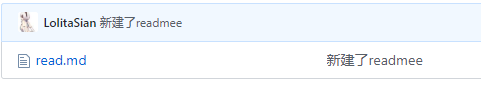(눈_눈)我缓缓打出一个问号，我的commit怎么多写了一个e？我文件名字叫readme我怎么就写了read
先来看看怎么查看自己的提交记录？虽然写错了查看提交记录也没用。我就是单纯想让你们多学一条命令：
$ git log
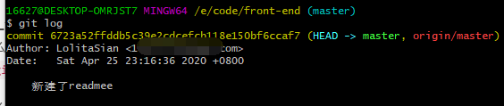提交记录里也显示我就是多写了一个e。
怎么抢救一下commit的注释？
$ git commit --amend -m "修改的内容"
那怎么抢救一下文件名？
直接修改文件名重新提交就可以啦。
git add -A —> git commit -m “修改文件名” —> git push origin master
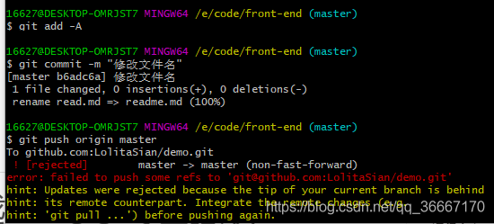？push时候报错？
这是因为github觉得我的本地仓库和远程仓库冲突了：
因为我刚才在本地修改了上一次的commit信息。（后边详细解释）$ git push origin master -f 这个-f就是force，强制推送。
推完之后看看你的远程仓库，文件名改了，文件名后边的注释也是我第二次commit的注释。上边有个commit选项，
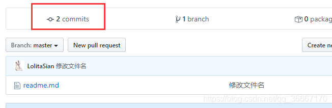 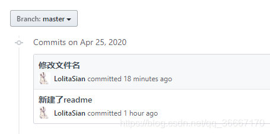补充解释
$ git commit --amend的作用：
github不管你做错了啥，他都会给你保存的，就是即使你改了，你的错误记录永远存在！但是使用git commit --amend，你可以神不知鬼不觉悄咪咪修改你的错误commit注释，╭(●｀∀´●)╯只有天知地知你知。
push时候报错：
github你可以理解为差额备份，就是你本地提交上去之后，它备份起来。你本地修改了，它会对你修改的部分继续备份。也就是说在你这次修改之前，本地仓库应该和远程仓库一模一样。
但是我刚才强行修改了上次的commit注释信息。现在本地仓库里；
上次的commit是“新建了readme”，
使用git log看一下，本地仓库上次的提交注释确实是改变了。
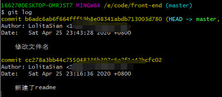但是远程仓库上次的commit是“readmee”。
我修改的是上次的commit，所以我这次推的时候github就认为这次修改之前的本地仓库和远程仓库不一样，因此就会报错说我数据冲突。
上边push报错，我自己知道数据差在哪里，所以使用了强制推送。但是在团队合作中，push报错，那铁定是你队友修改了远程仓库，如果你再强制上传，那你就是毁了你队友的代码。所以如何保证在你修改之前，自己的文件跟远程仓库一致呢。
方法1： $ git pull 仓库名称
尝试一下
比如我现在跑到我的远程仓库修改了readme：
点要修改的文件，进去之后点击编辑。
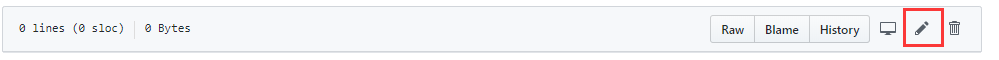写内容
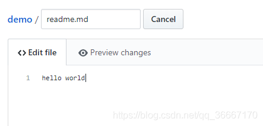写完内容提交
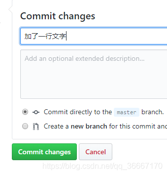这时候我已经修改成功了
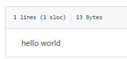git pull完成之后打开本地的readme，发现hello world已经进来了嗷。
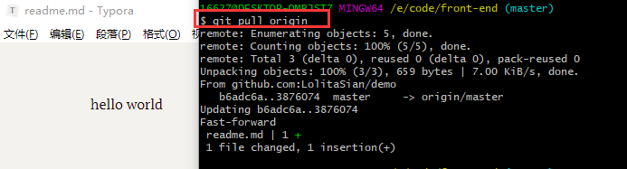git log看一下，commit的记录也显示了。
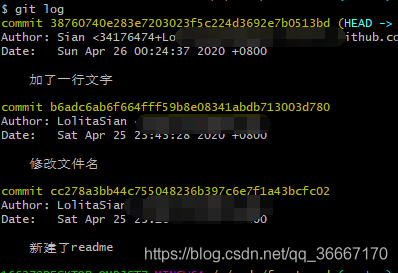方法2：
$ git fetch + $ git merge
尝试一下，
这次我又在远程仓库加一行字
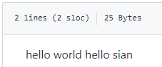git fetch，看起来数据也是拉下来了，要 git merge干嘛。然鹅！ 事情是这样的，git fetch之后，我打开本地文件，发现内容没变
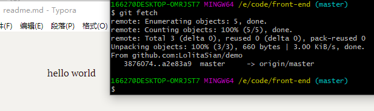那继续git merge，这之后本地文件内容才改变！
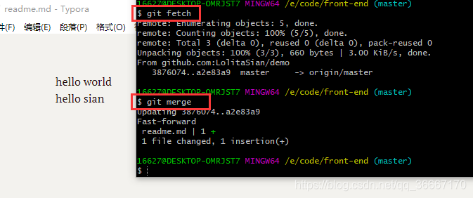我在提示一下，我在fetch之后，不止没有修改本地文件，就连git log也没显示我下拉文件了，但是merge之后就都显示了。我们可以认为 pull = fetch+merge。git fetch 并没更改本地仓库的代码，只是拉取了远程数据，git merge才执行合并数据。
回想一下你刚才是怎么push到远程的
git add添加到上传缓存区
git commit给缓存区的内容添加备注，此时本地的commit修改啦，但是远程的commit和文件都没修改。
git push 修改远程文件和commit信息
而你下拉文件过程
git fetch 将数据拉下来，但是没修改本地的commit和文件
git merge 改变本地数据
下拉仓库学会了，那克隆呢？
克隆就是你本地上没有，你直接把远程仓库的东西搞下来。
我现在有一个完整仓库，点击右边的绿色按钮。
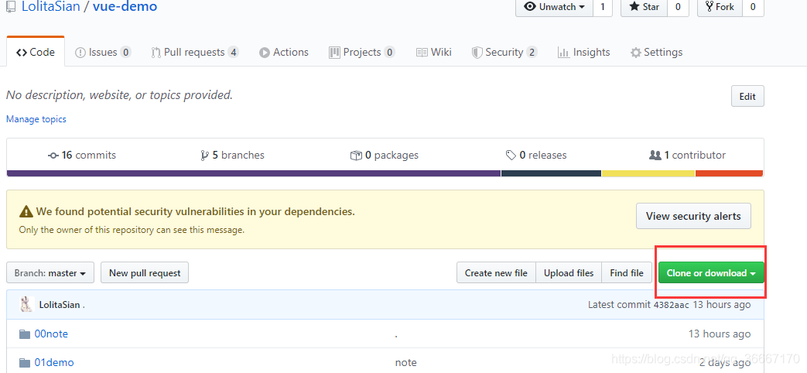 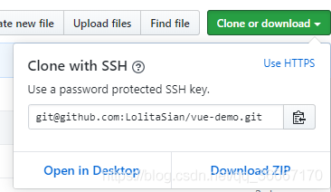如果你只想看看源码，那你可以直接选download zip，下载源码压缩包。
如果你使用的是git desktop，那你就选open in desktop
如果你想学克隆你就继续看，很简单的就一句。
仓库是你自己的，你就使用SSH连接，不是你自己的，你没权限你就切换到HTTPS，再复制地址。
它克隆下来是一个文件夹，你想把文件夹放哪里就在哪打开gitbash
$ git clone 加上你刚才的地址
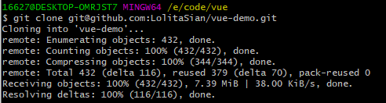我在E:\code\vue里执行了克隆。
(｡◕ˇ∀ˇ◕）。下载完成后，打开这个文件夹，就发现里边有个文件夹了。文件夹名字就是远程仓库的名字。
还记得git remote -v吗？用它看一下你下下来的本地仓库连接上那个远程仓库没。
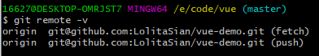已经连接了嗷。放心使用吧。
———————————————— 版权声明：本文为CSDN博主「LolitaAnn」的原创文章，遵循CC 4.0 BY-SA版权协议，转载请附上原文出处链接及本声明。 原文链接：https://blog.csdn.net/qq_36667170/article/details/79085301